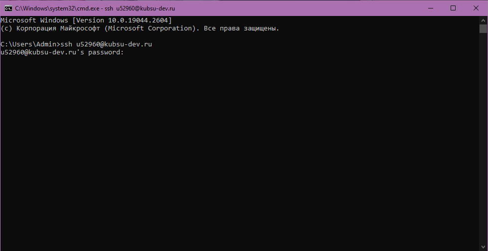
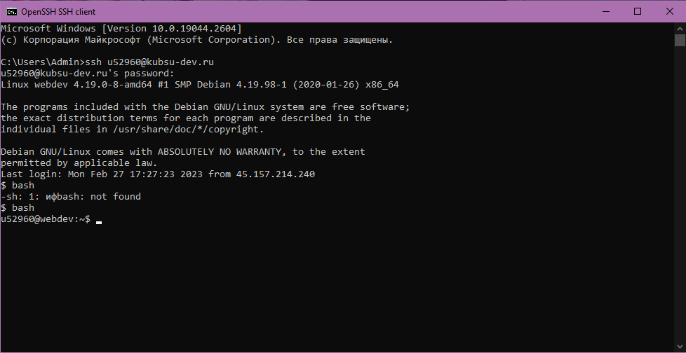
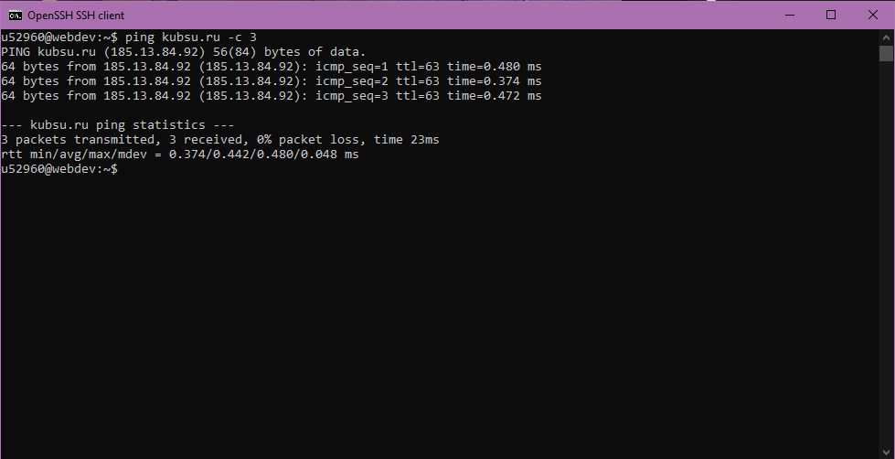
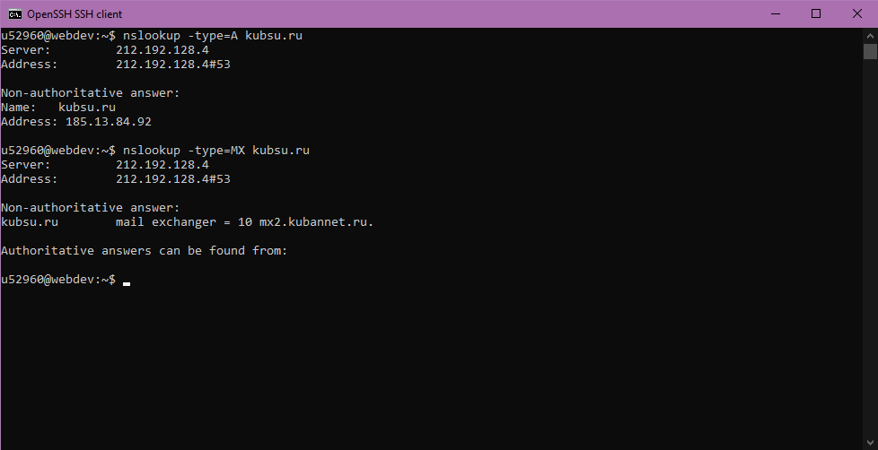
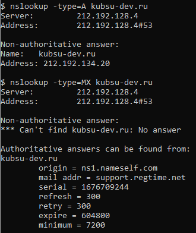
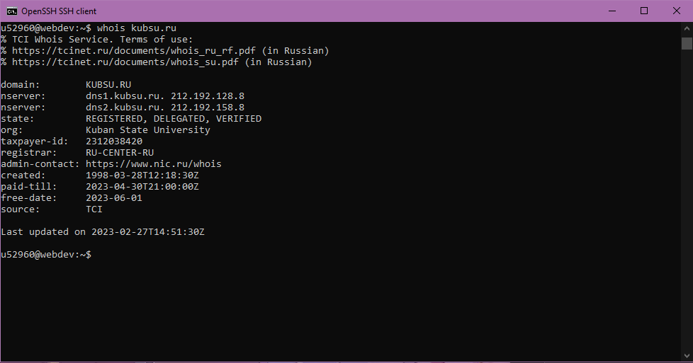
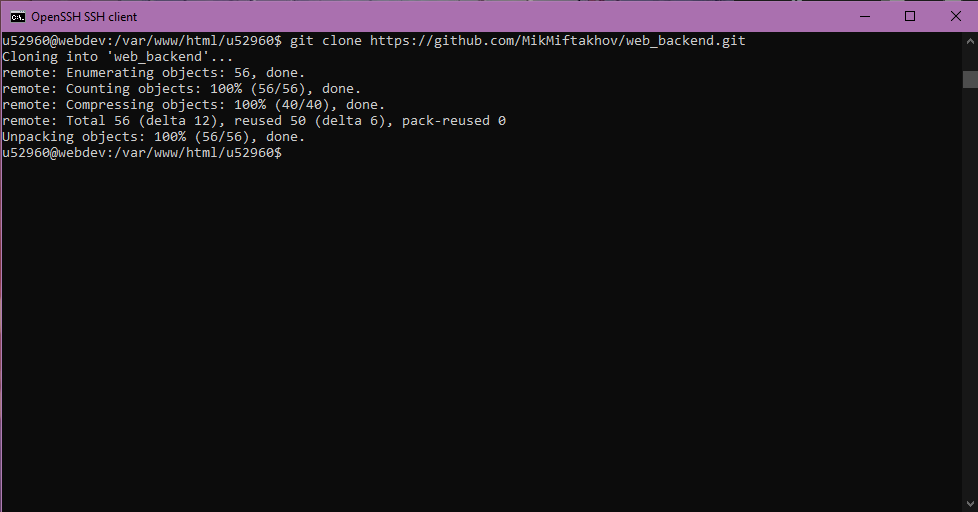
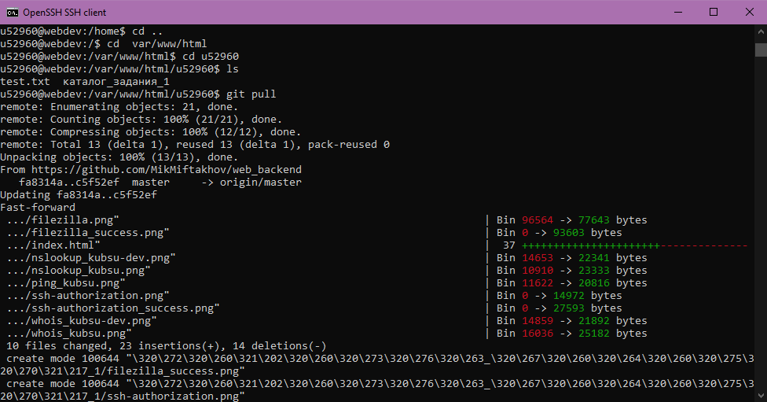
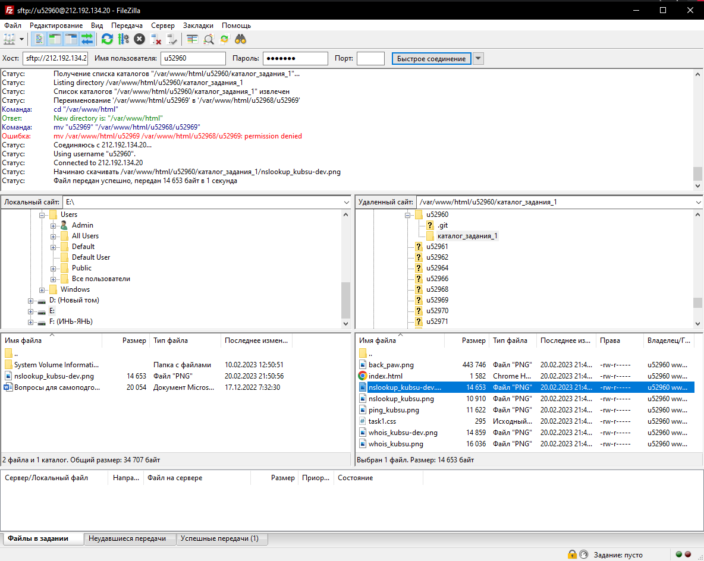

Установка ssh соединения с удаленным сервером запросом
В командную строку cmd вводим команду ssh, далее вводим логин и пароль


Работа с PING
Команда позволяет проверить подключение к серверу(другому компьютеру) на уровне IP, а также получить
время задержки подключения

Работа с nslookup(name server lookup поиск на сервере имён)
Используется для получения из доменной системы имен(DNS) доменного имени, IP-адреса или другой информации из записей DNS
Запись A (address) позволяет узнать IP адрес
Запись MX (Mail eXchange, обмен почтой) хранит соответствие доменного имени почтовому серверу этого домена


Работа с whois
Используется для получения регистрационных данных о владельцах доменных имён, IP-адресов и автономных систем


Использование git
С помощью команды cd перемещаемся в нужный каталог. Используем git clone для создания репозитория. Используем команду git pull для добавления файлов из репозитория github на удаленный сервер


Работа с filezilla
